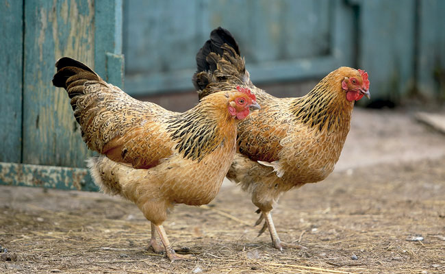
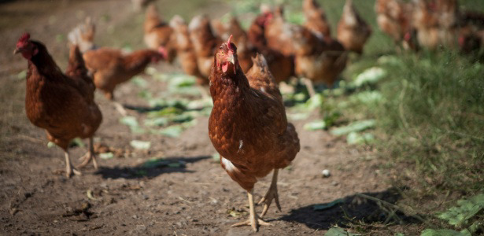

Um projeto de desenvolvimento rural de ingredientes de valor agregado no setor avícola de raças puras e selecionadas de gallus gallus, e tinamídeos para consumo humano de carnes mais gostosas e ovos de qualidade.
A Agropecuária SOLTOS NO CAMPO é uma granja localizada nos arredores rurais da cidade de Cordeiro na região Serrana do estado do Rio de Janeiro, trabalhando com todas as etapas da criação de aves.
Temos como princípio somente trabalhar com aves soltas pastando e se alimentando livremente. É uma nova maneira de conhecermos consumirmos ingredientes locais que oferecem valor agregado. O projeto SOLTOS NO CAMPO permite que as relações entre agricultores, avicultores, cozinheiros e consumidores se autentica e continua.

Contato
p@grupogou.com.br
RIO DE JANEIRO 22° 59 0 S, 43° 13 33 W
MADRID 40° 25 48 N, 3° 40 40 W